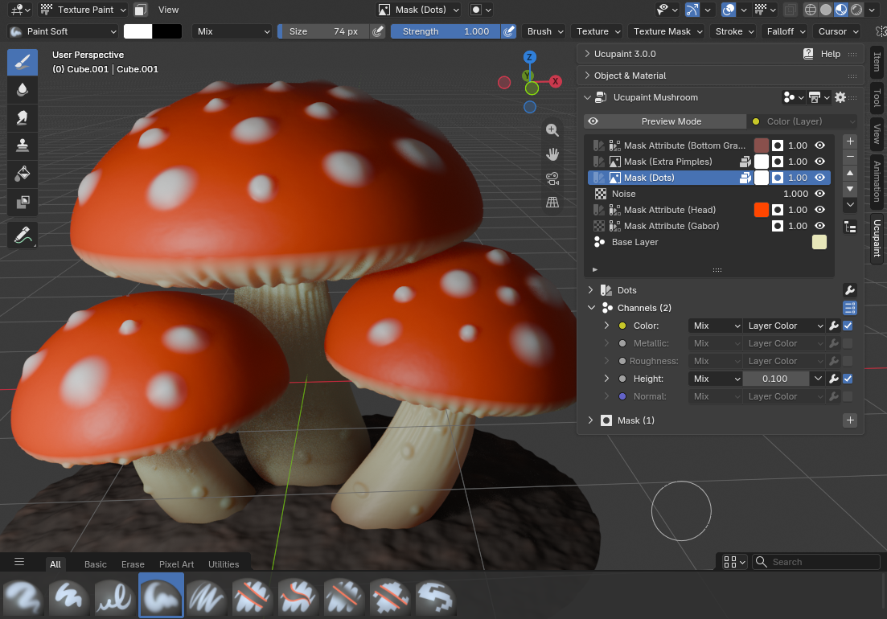
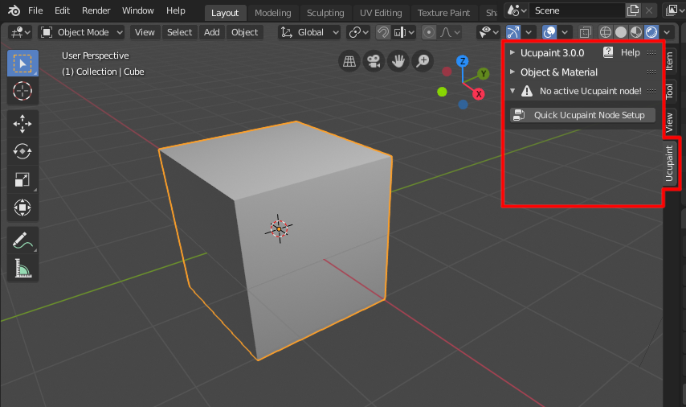
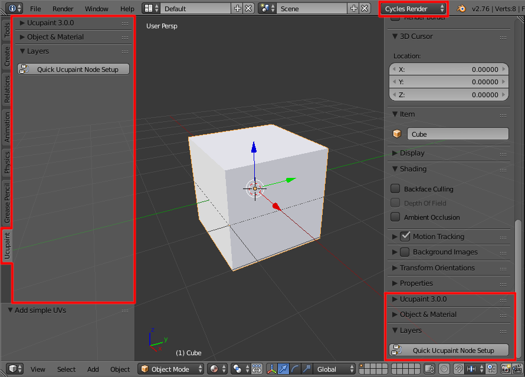

Ucupaint Documentation¶

What is Ucupaint?¶
Ucupaint is a Blender addon that stacks images, textures, and color attributes into layers with mask and baking support.
Requirements¶
You need at least Blender 2.76 to use this addon, but more advanced features may only be available in modern versions of Blender (2.80 & above).
Installation¶
- Go to GitHub release page and download an addon package according to your Blender version.
- Or if you're using Blender 4.2+, you can also download it from the extension platform
- Open Blender, go to Edit > User Preferences, select the Add-ons tab, press the Install button, browse to your downloaded addon zip file, and click Install add-on.
Contribute¶
Visit Ucupaint Github to access or contribute to the source code. Or visit Ucupaint Wiki Github to access or contribute to the source code of this wiki.
Sponsor¶
If you find the addon useful, you can sponsor the addon development here and get the Ucupaint Plus version of the addon.
Discord Server¶
You can join Ucupaint Discord to ask or discuss things related to Ucupaint.
Locations¶
You can find Ucupaint in the properties panel of the 3D Viewport and also in the Shader editor.
Blender 2.80 and above¶
For Blender 2.80 and above, it's in the Ucupaint tab. The tab is only visible when you select an object that can have a material (mesh, curve, etc).
 |
|---|
| Ucupaint location in Blender 2.80 and above |
Blender 2.7x¶
For Blender 2.7x, you should be using the Cycles render engine. The UI is only visible when you select an object that can have a material (mesh, curve, etc).
 |
|---|
| Ucupaint locations in Blender 2.76 to 2.79 are only available if you're using Cycles |